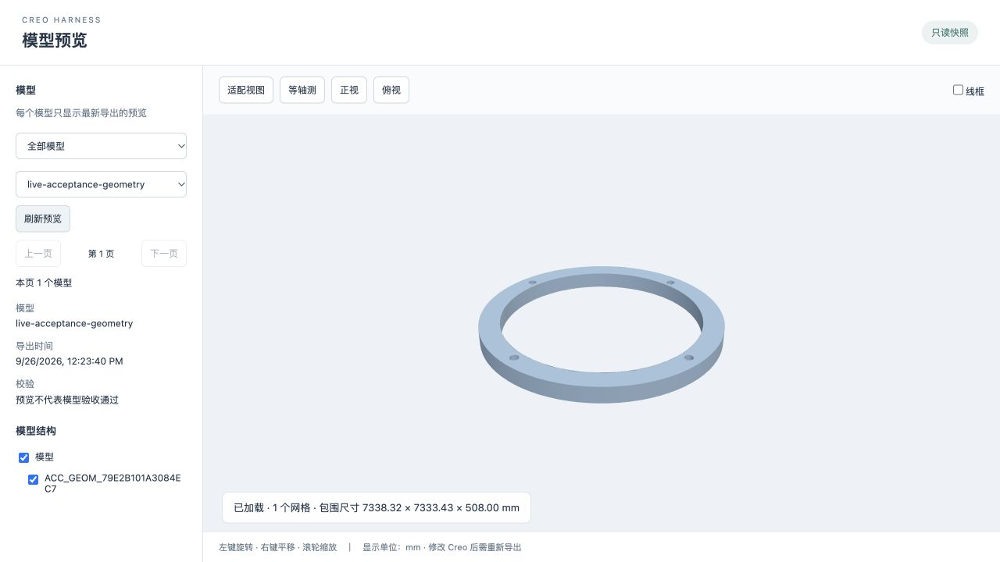

浏览与打开模型
列出 Creo 工作目录里的零件、装配和工程图，按路径和数字版本打开。同名但路径或版本不同的模型会被拒绝，避免改错对象。
面向 Creo Parametric 的 AI 助手
在 DeepSeek Harness 里说出你要改什么。Creo Harness 负责核对目标、写入、再生，再把模型里的实际结果读回来给你看。参数、尺寸、关系式和原生特征都能这样操作。
| 参数 | 类型 | 值 |
|---|---|---|
| LENGTH | 实数 | 80.000 |
| WIDTH | 实数 | 50.000 |
| THICKNESS | 实数 | 8.000 |
围绕机械设计工程师每天在 Creo 里重复的操作，通过对话或参数面板完成。
列出 Creo 工作目录里的零件、装配和工程图，按路径和数字版本打开。同名但路径或版本不同的模型会被拒绝，避免改错对象。
读取并修改参数、尺寸和完整关系式。一次调用完成核对、写入、再生和回读，你看到的是模型里的实际值。
把子模型的参数提升为装配参数，建立父到子的关系驱动，在装配层统一控制零件。
从项目模板创建零件或装配，创建草绘、拉伸和旋转；向已有零件追加孔、圆角、倒角、抽壳和一方向尺寸阵列。生成的是可继续编辑的原生特征。
不想打字时，直接在面板里新增、修改、删除参数，应用到 Creo，再单独保存或导出预览。AI 和面板走同一条操作队列。
普通修改和预览都不会隐式保存，落盘是单独的一步。每次操作留下持久化回执，超时后可以查询结果，不必盲目重发。
改完直接在浏览器里看几何：旋转、平移、缩放，切换等轴测、正视、俯视和线框，按模型结构显示或隐藏零件。
每个模型只保留最新一次导出，重新导出后刷新同一个链接即可。预览是只读快照，不会保存模型。

对话和参数面板共用同一个 CreoBridge，所有操作排进一条串行队列，按顺序进入 Creo。
你的电脑
协调层
Windows 工作站
首次使用请先免费注册账号。填写邮箱和图形验证码，收到邮件后输入验证码并设置密码。运行 Windows 安装器。它会识别已安装的 Creo，多版本时可选择目标，也可手动指定 Common Files。安装完成后打开 Creo Parametric 和 Creo Harness，选择模型工作目录，用邮箱和密码登录并启动服务。
同机使用时，先安装 DSH 桌面端，打开一次并完全退出。启动 Creo Harness 后，它会安装随附的 Creo 插件。若 DSH 此时已打开，请完全退出 DSH，在 Creo Harness 中重试。安装成功后重新打开 DSH。两台电脑请按异机连接设置。
试试这样说：
列出 Creo 工作目录中的模型，不要打开或保存。
打开 parts/example.prt，读取参数，不要保存。
在 Creo 工作站运行安装器，即可联网下载匹配的运行包。安装器内含同版本的 DeepSeek Harness（DSH）插件。
下载 Windows 安装器Windows 10 / 11 x64 · Creo 6.0.6.0 / 8.0.0.0
如果你通过 v0.4.0 安装器安装，请先停止服务，退出客户端，再运行一次新版安装器。原有模型工作目录和配置会保留。
此后客户端会自动检查新版。在「运行状态」中点击「更新并重启」即可升级。
更新插件时，客户端会等当前 Creo 操作完成，再请求 DSH 正常退出。若 DSH 暂时无法退出，更新会等待。升级完成或恢复旧版后，客户端会重新打开原先运行的 DSH。
工作站无法访问公网？咨询商用离线部署